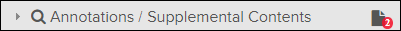

- If the document has any attachments with an alert type of Important, the Important Attachments pop-up appears with a list of those attachments.
- Attachments Available (Click to View) notification banners appear at the top of the document in the Content pane for any attachments that have an alert type of Important or Normal.
- As you scroll through the document in the Content
pane, any attachments made to specific locations are shown on the left side
of the document. If the document in rendered in HTML format, the possible
attachment locations are specific anchor points that can contain attachment
category icons (such as
 supplements and/or
supplements and/or  temporary revisions). If the document is a PDF, the
possible attachments locations are entire pages with a notification banner
message when attachments exist on a page.Note: Since there can exist too many attachment categories to all be shown simultaneously in one anchor location, only the ones with the highest icon priority are shown, but a list of all attachments at a location can be viewed by clicking the icon cluster. Refer to the Flatirons Pinpoint Configuration Guide, "Configuring Attachment Category Types" section.
temporary revisions). If the document is a PDF, the
possible attachments locations are entire pages with a notification banner
message when attachments exist on a page.Note: Since there can exist too many attachment categories to all be shown simultaneously in one anchor location, only the ones with the highest icon priority are shown, but a list of all attachments at a location can be viewed by clicking the icon cluster. Refer to the Flatirons Pinpoint Configuration Guide, "Configuring Attachment Category Types" section. - The
 Attachments tab on the right side of the page is
yellow when there are attachments to the current document. The number of
attachments is shown in parentheses on the
Attachments tab label.
Attachments tab on the right side of the page is
yellow when there are attachments to the current document. The number of
attachments is shown in parentheses on the
Attachments tab label. - The
 Number of Supplemental Contents icon appears to the
right of the Annotations / Supplemental Contents
header title. The number in the lower-right of the
Number of Supplemental Contents icon indicates how
many attachments are within the entire publication. Here is an example of
the header with the icon:
Number of Supplemental Contents icon appears to the
right of the Annotations / Supplemental Contents
header title. The number in the lower-right of the
Number of Supplemental Contents icon indicates how
many attachments are within the entire publication. Here is an example of
the header with the icon: 
To view attachments, do these steps:
-
Open a document that has an attachment category icon.
If a document has attachments, the one with the highest number category icon priority is shown to the left of the TOC entry (such as the supplements or temporary revisions if there are no
attachments of a higher priority type).If the document has any attachments marked as important, the Important Attachments pop-up appears with a list of those attachments. Attachments that are not marked as important are available using one of the other choices described in the next step.
-
Do one of these choices:
- If you see the attachment you want to view listed in the Important Attachments pop-up, skip to the next step.
-
Click an Attachments Available (Click to View) notification banner at the top of the document in the Content pane.
Note: Notifications with a priority of None are not shown in these alerts. Separate notification banners are shown for each category of attachments with an alert type of Normal or Important.The Attachments pop-up lists the attachments and shows their Title, Date, and Updated Date.
- If you are looking for an attachment that was made to a specific
location in the document, scroll the Content pane until
you see an attachment category icon (such as supplement/ temporary revision) or attachment notification
banner to the left of that location.
- Click the
Attachments tab on the right side of the page or
click the
 Upload Temporary Revision / Supplement icon (if
available).
Upload Temporary Revision / Supplement icon (if
available).Both of these options open the
Attachments pane with a list of attachments in the
document. Refer to Attachments Pane. -
Click the
Number of Supplemental Contents icon in the
Annotations / Supplemental Contents
header.All attachments in the publication are listed in the Search Results.
The attachment appears as a new tab in the Content page. While viewing it, you can return to the parent content by clicking the applicable tab under the Content header or the Parent Content icon (if available) in the Content header.